31. Multithreading
- 多线程是指从软硬件上实现的多条执行流程的技术（多条线程由CPU调度执行）
如何创建多条线程
- Java是通过java.lang.Thread类来创建多线程的。
方式一：继承Thread类
- 定义一个子类MyThread，继承Thread类，重写run()方法。
- 创建MyThread对象
- 调用start()方法，启动线程。（启动后还是执行run()方法）
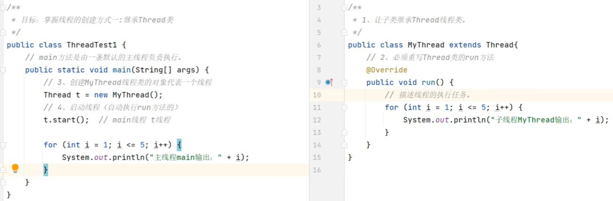
-
优缺点：
- 优点：编码简单
- 缺点：
- 无法返回结果线程类已经继承了Thread类，无法继承其他类，不利于功能的扩展。
- 假如线程执行完毕后有一些数据需要返回，重写的run方法不能直接返回结果
-
注意事项：
- 启动线程必须是调用start()方法，不能直接调用run()方法。（直接调用run()方法，会被当成普通的对象）
- 不要把主线程的任务全部放在子线程之前
方式二：实现Runnable接口
- 定义一个线程任务类MyRunnable实现Runnable接口，重写run()方法。
- 创建MyRunnable任务对象
- 把MyRunnable任务对象交给Thread类创建线程对象
public Thread(Runnable target)封装Runnable对象称为线程对象
- 调用start()方法，启动线程。（启动后还是执行run()方法）
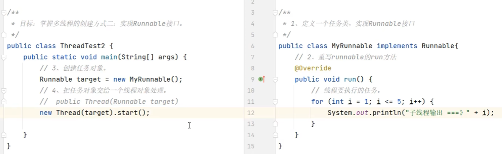
-
优缺点：
- 优点：任务类只是实现接口，可以继续继承其他类，实现其它接口，扩展性强
- 缺点：
- 需要多创建一个Runnable对象
- 假如线程执行完毕后有一些数据需要返回，重写的run方法不能直接返回结果
-
方式二的匿名内部类写法
- 可以创建Runnable匿名内部类对象
- 再交给Thread线程对象
- 再调用线程对象的start()方法启动线程
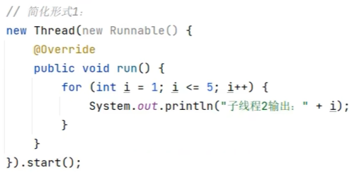
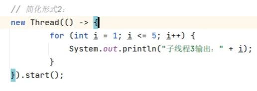
方式三：利用Callable接口与FutureTask类
- 创建任务对象
- 定义一个类实现Callable接口，重写call()方法，封装要做的事情，和要返回的数据
- 把Callable类型的对象封装成FutureTask（线程任务对象）
- FutureTask是一个任务对象，实现了Runnable对象
- 可以在线程执行完毕之后，用未来任务对象调用get方法获取线程执行完毕的结果
- 把线程任务对象交给Thread对象
- 调用Thread对象和start方法启动线程
-
线程执行完毕后，通过FutureTask对象的get()方法获取线程任务执行的结果
-
FutureTask提供的API：
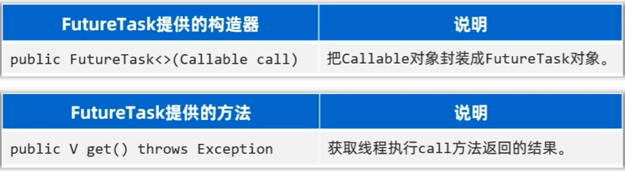
- 优缺点：
- 优点：
- 线程任务类只是实现接口，可以继续继承类和实现接口，扩展性强
- 可以在线程执行完毕后去获取线程执行的结果
- 缺点：
- 代码复杂度高，需要定义一个类实现Callable接口，重写call()方法，还需要FutureTask对象，还需要Thread对象
- 优点：
Thread提供的方法
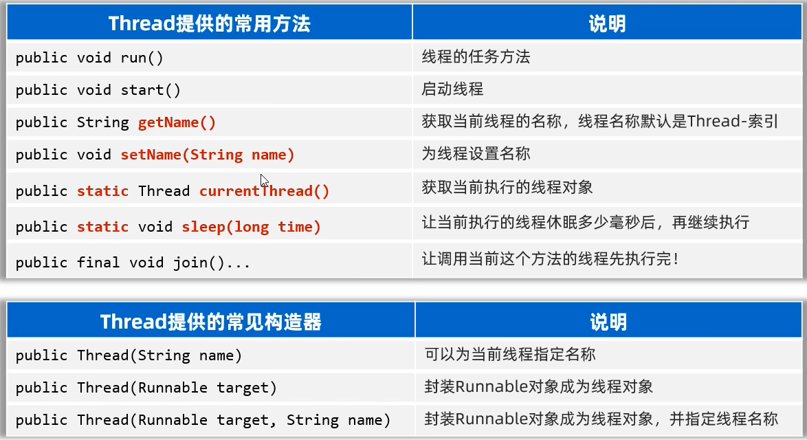
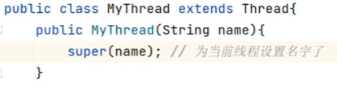
- Thread类还提供了诸如：yield(),interrupt(),守护线程，线程优先级等线程的控制方法，在开发中很少使用
线程安全问题
- 多个线程同时操作同一个资源的时候，可能会出现业务安全问题
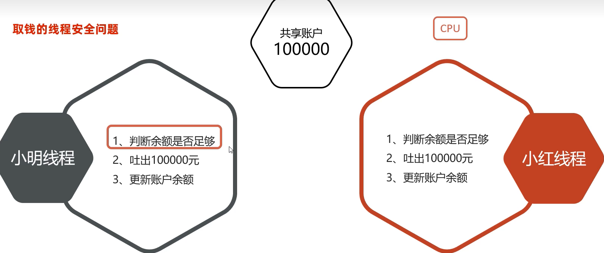
线程同步
- 解决线程安全问题的方案
思想
让多个线程实现先后依次访问共享资源，这样就解决了安全问题
常见方案
- 加锁：每次只允许一个线程加锁，加锁后才能访问，访问完毕后自动解锁，然后其他线程才可以再加锁进来
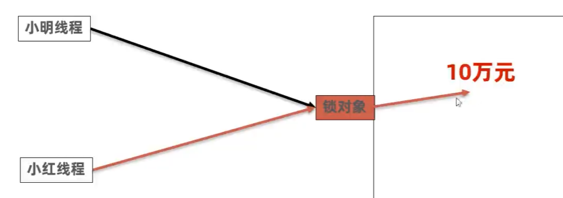
方式一：同步代码块
- 作用：把访问共享资源的核心代码块上锁，以此来保证线程安全
- 原理：每次只允许一个线程加锁，加锁后才能访问，访问完毕后自动解锁，然后其他线程才可以再加锁进来
- 注意事项：对于当前同时执行的线程来说，同步锁必须是同一把(同一个对象)，否则会出bug
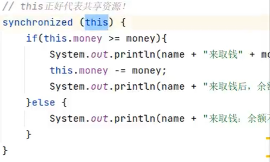
方式二：同步方法
- 作用：把访问共享资源的核心方法上锁，以此来保证线程安全
- 原理：每次只允许一个线程加锁，加锁后才能访问，访问完毕后自动解锁，然后其他线程才可以再加锁进来
- 底层原理：
- 同步方法其实底层也是有隐式锁对象的，只是锁的范围是整个方法代码
- 如果方法是实例方法：同步方法默认用this作为锁的对象
- 如果方法是静态方法：同步方法默认用字节码(类名.class)作为锁的对象
方式三：lock锁
- lock锁是JDK5开始提供的一种新的锁定操作，通过它可以创建出锁对象进行加锁和解锁，更灵活，更方便，更强大
- lock锁是接口，不能直接实例化，可以采用它的实现类ReentrantLock来构建lock锁对象
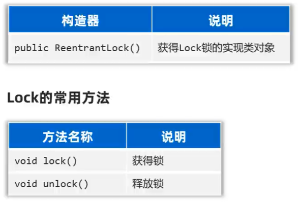
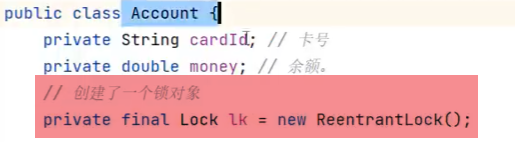
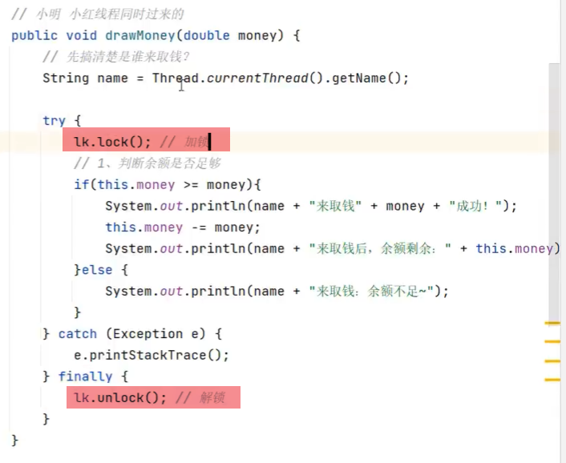
- 用finnally来确保锁一定会被释放
线程通信
- 当多个线程共同操作共享的资源时，线程间通过某种方式互相告知自己的状态，以互相协调，并避免无效的资源争夺
- 线程通信的前提是保证线程安全
线程通信的常用模型（生产者与消费者模型）
- 生产者线程负责生产数据
- 消费者线程负责消费生产者生产的数据
- 注意：生产者生产完数据应该等待自己，通知消费者消费。消费者消费完数据也应该等待自己，再通知生产者生产
Object类提供的等待和唤醒方法
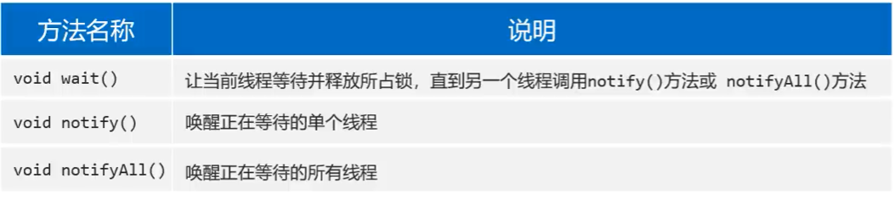
- 上述方法应该使用当前同步锁对象进行调用
- 先唤醒别人，再等待自己
线程池
认识线程池
- 线程池是一种复用线程的技术
不使用线程池的问题
- 用户每发起一个请求，后台就需要创建一个新线程来处理，下次新任务来了肯定又要创建新线程处理的，而创建新线程的开销是很大的，并且请求过多时，肯定会产生大量的线程出来，这样会严重影响系统的性能
线程池工作原理
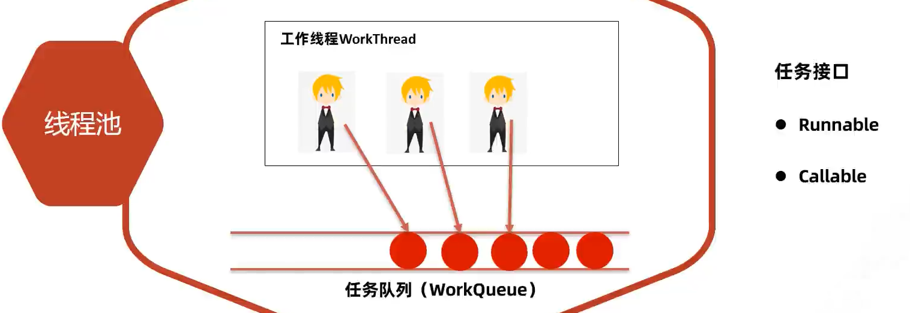
如何创建线程池
- JDK5.0之后提供了ExecutorService接口
如何得到线程池对象？
方式一：使用ExecutorServices的实现类ThreadPoolExecutor自创建一个线程池对象
方式二：使用Executors（线程池的工具类）调用方法返回不同特点的线程池对象
方法一：ThreadPoolExecutor构造器
- corePoolSize：指定线程池的核心线程的数量
- maximumPoolSize：指定线程池的最大线程数量
- keepAliveTime：指定临时线程的存活时间
- unit：指定keepAliveTime的时间单位
- workQueue：指定线程池中的任务队列
ArrayBlockingQueue基于数组实现的任务队列，可以控制大小LinkedBlockingQueue基于链表实现的任务队列，不限制大小
- threadFactory：指定线程工厂，用于创建线程
Executors.defaultThreadFactory()获取一个默认的线程工厂
- handler：指定拒绝策略（线程都在忙，任务队列也满了的时候，新任务来了该怎么处理）
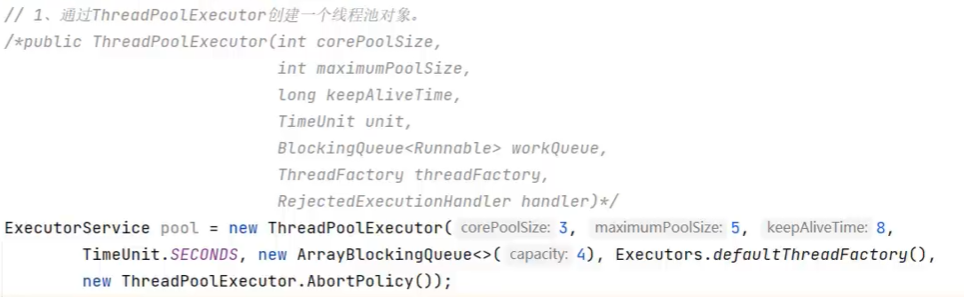
- 注意事项：
- 临时线程什么时候创建？
- 新任务提交时发现和信线都在忙，任务队列也满了，并且还可以创建临时线程，此时才会创建临时线程
- 什么时候会拒绝新任务？
- 核心线程和临时线程都在忙，任务队列也满了，新的任务过来的时候才会开始拒绝任务
- 临时线程什么时候创建？
方法二：Executors工具类
- Executors工具类提供了一些静态方法，可以创建不同类型的线程池对象
常用静态方法
- 这些方法的底层都是通过线程池的实现类ThreadPoolExecutor创建的线程池对象
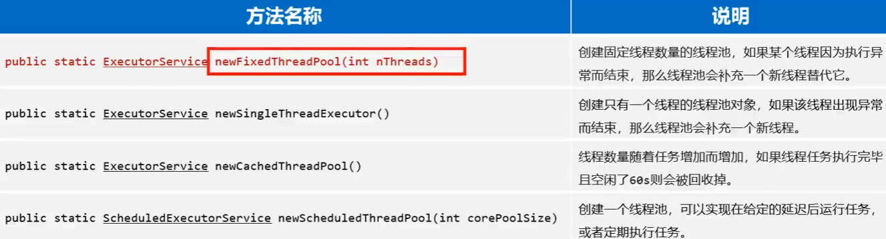
核心线程数量到底配置多少呢？
- 计算密集型任务：核心线程数量 = CPU + 1
- IO密集型任务：核心线程数量 = CPU * 2
使用可能存在的陷阱
- 大型并发系统环境中使用Executors如果不注意可能会存在系统风险
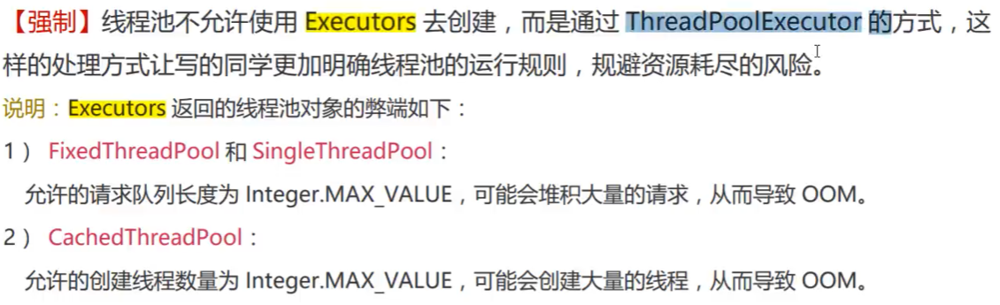
线程池处理runnable任务
ExecutorService的常用方法
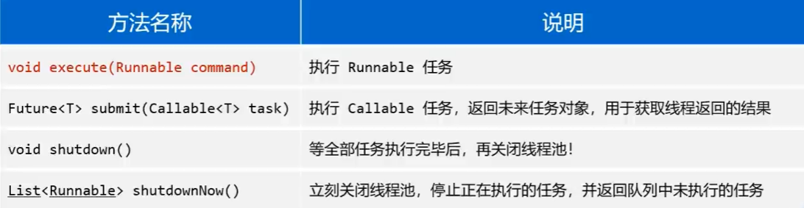
新任务拒绝策略
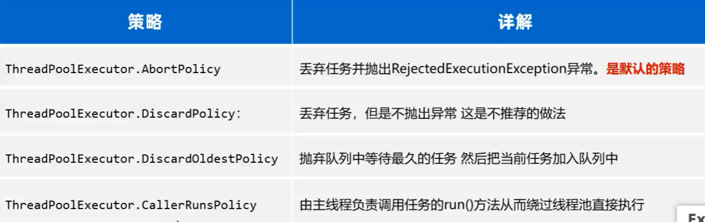
线程池处理callable任务
ExectorService的submit()方法
Future<T> submit(Callable<T> task)： 执行Callable任务，返回未来任务对象，用于获取线程返回的结果
进程
- 正在运行的程序（软件）就是一个独立的进程
- 线程是属于进程的，一个进程中可以同时运行很多个线程
-
进程中的多个线程其实是并发和并行执行的
-
并发的含义：
- 进程中的线程是由CPU负责调度执行的，但CPU能同时处理线程的数量有限，为了保证全部线程都能往前执行，CPU会轮询为系统的每个线程服务，由于CPU切换的速度很快，给我们的感觉就是这些线程在同时执行，这就是并发
-
并行的理解：
- 在同一个时刻上，同时有多个线程被CPU调度执行
线程的生命周期
- 也就是线程从生到死的过程中，经历的各种状态及状态切换
- 理解线程这些状态有利于提升并发编程的理解能力
Java线程状态
- Java总共定义了六种状态
- 六种状态都定义在Thread类的内部枚举类中
- NEW（新建）：线程刚被创建，但是并未启动
- Runnable（可运行）：线程已经调用了start()，等待CPU调度
- Blocked（阻塞）：线程在执行的时候未竞争到锁对象，则该线程进入Blocked状态
- Waiting（等待）：一个线程进入waiting状态，另一个线程调用notify或者notifyAll方法才能够唤醒
- Timed Waiting（定时等待）：同waiting状态，有几个方法(sleep, wait, join)有超时参数，调用他们将进入Timed Waiting状态
-
Terminated（终止）：因为run方法正常退出而死亡，或者因为没有捕获的异常终止了run方法而死亡
-
注意：
sleep不会释放锁，而wait会释放锁
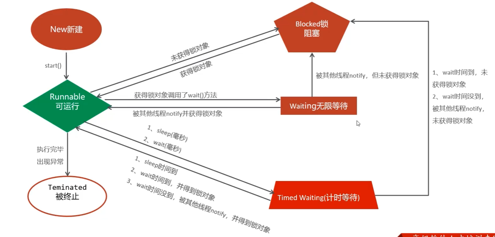
拓展
悲观锁
- 一上来就加锁。
- 每次只能一个线程进入访问完毕后，在解锁。
- 线程安全，性能较差！
乐观锁
- 一开始不上锁，认为是没有问题的
- 等要出现线程安全问题的时候才开始控制
-
线程安全，性能较好！
-
整数修改的乐观锁是原子类实现的
private AtomicInteger count = new AtomicInteger(0);
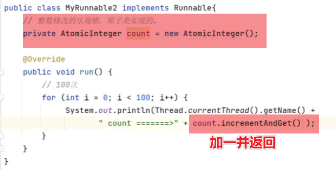